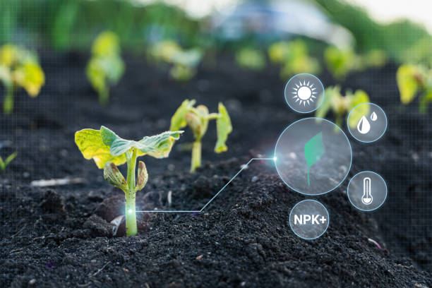

Agricultura Sustentável

A agricultura sustentável é um conjunto de práticas e técnicas que
visam garantir a produção de alimentos de forma ambientalmente
consciente, utilizando recursos de maneira eficiente, respeitando a
biodiversidade e promovendo o bem-estar social e econômico dos
agricultura.
Clique aqui para saber mais
Inteligências Artificiais
As inteligências artificiais generativas são sistemas de IA capazes
de criar conteúdo original, como textos, imagens e músicas. Essas
redes neurais podem aprender a partir de grandes conjuntos de dados
e gerar resultados criativos e realistas.
Clique aqui para saber mais
Cultivo Eficientes

O cultivo eficiente busca otimizar recursos e aumentar a
produtividade agrícola. Utilizando tecnologias avançadas, manejo
adequado e uso consciente de insumos, busca-se obter maiores
rendimentos com menor impacto ambiental. Clique aqui para saber mais
Formulario de contato
Caso queira entrar em contato conosco acesse o link a seguir.
Clique aqui para saber mais